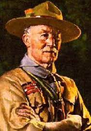

O Grupo Escoteiro Guaracy foi fundado em Farroupilha, cidade do estado do Rio Grande do Sul, Brasil,
em 16 de dezembro de 1979. O grupo teve início com a iniciativa do então chefe Sebastião Antônio Rech,
que teve a ideia de fundar um grupo escoteiro na cidade para oferecer atividades educativas
e de lazer para os jovens.
O Escotismo é um movimento global de jovens que foi fundado em 1907 por Robert Baden-Powell na Inglaterra. Baden-Powell, que serviu como militar na África do Sul, desenvolveu o Escotismo como uma forma de treinamento para jovens que enfatizava habilidades práticas, disciplina, autoconfiança e serviço comunitário. O Escotismo rapidamente se espalhou pelo mundo, e atualmente há mais de 50 milhões de escoteiros em mais de 160 países. O movimento é liderado pela Organização Mundial do Movimento Escoteiro, que coordena as atividades e recursos do Escotismo em todo o mundo.
